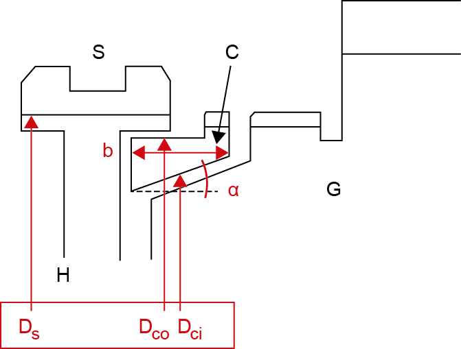
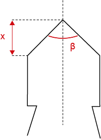

|
|
|


几何
几何数据用于同步环，也称为锥面。此外还需要数据用于花键齿顶定义（索引）和球块角。这是外部球角，用于保持同步器在其位置（啮合或分离）上。已为角度输入定义了特定的限值，以确保同步可以得到保证。
|  |  |
表54.1：图：（a）主要几何形状说明：S = 套筒，C = 环/锥，H = 轮毂，G = 齿轮，（b）花键齿顶几何形状
Geometry
Geometry data is needed for the synchronization ring, also called the cone. Additional data is needed for the spline tip definition (the indexing) and ball block angle. This is the external ball angle which holds the synchronizer in its position (engaged or disengaged). Specific limiting values have been defined for the angle input to ensure synchronization can be guaranteed.
Table 54.1: Figure: (a) Description of main geometry: S = Sleeve, C = Ring/Cone, H = Hub, G = Gear, (b) Spline tip geometry